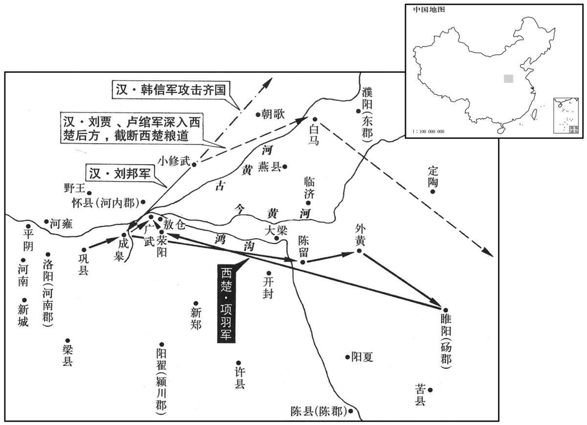
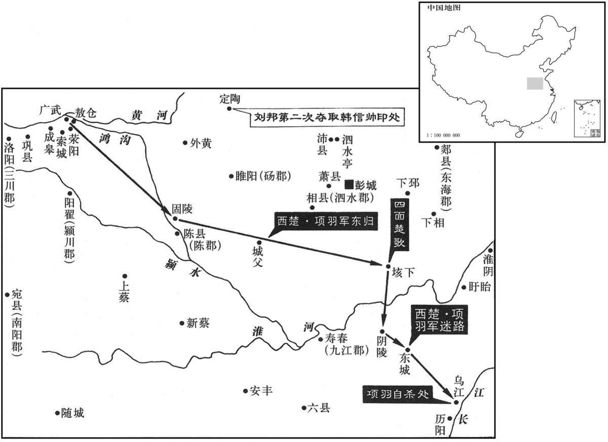

公元前203年资治通鉴：本年记事、原文与白话对照
按原书编年位置阅读；追叙和史论不等于本年发生的事件。白话采用所据译本，缺译不以生成译文补齐。
卷10 · 本年记事
公元前203年 · 高帝在位第4年
四年〔（戊戌、前二○三）〕
本年事件索引（现代整理）

本年形势与背景参考图

本年形势与背景参考图
冬，十月，信袭破齐历下军，遂至临淄。齐王以郦生为卖己，乃烹之；引兵东走高密，〔高密县在胶西，宣帝本始元年为高密国。宋白曰：高密，春秋时晏平仲所食邑。〕使使之楚请救。田横走博阳，〔此据史记也。班书作“横走博”。博阳近清河博关，此正韩信自赵进兵之路。临淄既破，君、相皆出走。其后韩信既虏田广于潍水，灌婴又败田横于嬴下。嬴县亦属太山郡。括地志：故嬴城在兖州博城县东北百里。唐之博城，汉太山之博县；此博阳，即博城之阳。〕守相田光走城阳，〔相，息亮翻。〕将军田既军于胶东。〔括地志：即墨故城在莱州胶水县南六十里，古齐地，汉为胶东国，以其地在胶水之东也。〕
冬季，十月，韩信打败了齐国的历下守军，随后直打到齐国的都城临淄。齐王田广认为郦食其出卖了自己，就煮杀了他。然后领兵向东逃往高密，派使者到楚国去请求救援。田横这时逃奔博阳，守相田光逃奔城阳，将军田既驻扎在胶东。
楚大司马咎守成皋，汉数挑战，〔数，所角翻。挑，徒了翻。〕楚军不出。使人辱之，数日，咎怒，渡兵汜水。〔张晏曰：汜水在济阴界。如淳曰：汜，音祀。左传曰：“鄙在郑地汜。”臣瓒曰：高祖攻曹咎于成皋，咎渡汜水而战，今成皋城东汜水是也。师古曰：瓒说得之，此水不在济阴也。“鄙在郑地汜”，释者云在襄城，则亦非此汜水。旧读音凡，今彼乡人呼之音祀。索隐曰：此水今见名汜水，音似；臣瓒说是。张晏曰：在济阴亦未全失。按古济水当此截河而南，又东流溢为荥泽。水南曰阴，此亦在济之阴，非彼济阴郡耳。括地志：汜水源出洛州汜水县东南三十二里方山。山海经：浮戏之山，汜水出焉。〕士卒半渡，汉击之，大破楚军，尽得楚国金玉、货赂，咎及司马欣皆自刭汜水上。汉王引兵渡河，复取成皋，军广武，〔孟康曰：于荥阳筑两城相对为广武，在敖仓西三皇山上。括地志：东广武、西广武在郑州荥阳县西二十里。戴延之西征记曰：三皇山上有二城，东曰东广武，西曰西广武，各在一山头，相去百步。汴水从广涧中东南流，今涸无水。城各有三面，在敖仓西。郭缘生述征记曰：一涧横绝上过，名曰广武，相对皆立城堑，遂号东、西广武。〕就敖仓食。
楚国大司马曹咎驻守成皋，汉军屡次挑战，楚军只是坚守不出。汉军于是派人到阵前百般辱骂曹咎，一连几天，激得曹咎暴怒，即领兵横渡汜水。楚国的士兵刚渡过一半，汉军就对它发起攻击，大败楚军，缴获了楚国的全部金银玉器和财物。曹咎和长史司马欣都在汜水之畔自杀身亡。汉王随即领兵渡过黄河，再次收复成皋，驻扎到广武，取用敖仓的粮食作军粮。
项羽下梁地十余城，闻成皋破，乃引兵还。汉军方围钟离昧于荥阳东，闻羽至，尽走险阻。羽亦军广武，与汉相守。数月，楚军食少。项王患之，乃为俎，置太公其上，告汉王曰：“今不急下，吾烹太公！”汉王曰：“吾与羽俱北面受命怀王，约为兄弟，吾翁即若翁；必欲烹而翁，幸分我一杯羹！”〔如淳曰：俎，高几之上也。李奇曰：军中巢橹谓之俎。师古曰：俎者，所以荐肉，示欲烹之，故置俎上；如说是。俎，在吕翻。方言：周、晋、秦、陇谓父为翁。若，汝也；而，亦汝也。古者以杯盛羹，今之杯侧有两耳者也。〕项王怒，欲杀之。项伯曰：“天下事未可知：且为天下者不顾家，虽杀之无益，只益祸耳！”项王从之。
项羽攻下了梁地十多个城邑后，听说成皋又被攻破，就率军返回。这时汉军正在荥阳东面围攻钟离昧，听说项羽大军到了，就全部撤往险要的地方。项羽也在广武驻扎下来，与汉军对峙。这样过了几个月，楚军粮食短缺。项羽很是担忧，便架设肉案，把刘邦的父亲放到上面，通告汉王说：“今日你如不赶快投降，我就煮杀了太公！”汉王道：“我曾与你一起面向北作为臣子接受楚怀王的命令，盟誓结为兄弟，因此我的父亲就犹如你的父亲。倘若你一定要煮杀你的父亲，那么望你也分给我一杯肉羹！”项羽怒不可遏，想要杀掉太公。项伯说：“天下的事情不可预料。况且有志争夺天下的人是不顾及自己家人的，即使杀了太公也没什么好处，不过徒增祸患罢了！”项羽依从了他的话。
项王谓汉王曰：“天下匈匈数岁者，〔师古曰：匈匈，喧扰之意，公休许容翻。〕徒以吾两人耳。愿与汉王挑战，决雌雄，毋徒苦天下之民父子为也！”汉王笑谢曰：“吾宁斗智，不能斗力。”项王三令壮士出挑战，汉有善骑射者楼烦辄射杀之。〔应劭曰：楼烦，胡人也。李奇曰：后为县，属鸠门。此县人善骑射。谓士为楼烦，取其称耳，未必楼烦人也。师古曰：李奇说是。射，而亦翻。〕项王大怒，乃自被甲持戟挑战。楼烦欲射之，项王瞋目叱之，〔瞋，昌真翻。〕楼烦目不敢视，手不敢发，遂走还入壁，不敢复出。汉王使人间问之，〔间问，微问也。间，工苋翻。〕乃项王也，汉王大惊。
项羽对汉王说：“天下沸沸扬扬地闹腾了好几年了，只是由于我们两个人相持不下的缘故。现在我愿意向你挑战，一决雌雄，不要再让天下的老百姓白白地忍受煎熬了！”汉王笑着推辞道：“我宁肯斗智，不肯斗力。”项羽便连着三次命楚军壮士出阵挑战，但次次都被汉营中善于骑射的楼烦射杀了。项羽因此勃然大怒，就亲自披甲持戟上阵挑战。楼烦又想要射项羽，项羽这时愤怒地瞪着大眼厉声喝斥，使楼烦双眼不敢直视项羽的目光，双手不敢张弓发箭，随即奔回营垒，不敢再露面了。汉王派人悄悄地探听那挑战者是谁，才知道竟是项羽本人，汉王为此大吃一惊。
于是项王乃即汉王，〔即，就也，从也。〕相与临广武间而语。羽欲与汉王独身挑战。汉王数羽曰：〔数，所具翻。〕“羽负约，王我于蜀、汉，罪一；矫杀卿子冠军，罪二；救赵不还报，而擅劫诸侯兵入关，罪三；烧秦宫室，掘始皇帝冢，收私其财，罪四；〔收私者，收取其财以为私有。〕杀秦降王子婴，罪五；诈坑秦子弟新安二十万，罪六；王诸将善地而徙逐故王，罪七；出逐义帝彭城，自都之，夺韩王地，并王梁、楚，多自与，罪八；使人阴杀义帝江南，罪九；为政不平，主约不信，天下所不容，大逆无道，罪十也。吾以义兵从诸侯诛残贼，使刑余罪人击公，何苦乃与公挑战！”羽大怒，伏弩射中汉王。汉王伤胸，乃扪足曰：“虏中吾指。”〔扪，音门，摸也。师古曰：伤胸而扪足者，以安众也。中，竹仲翻。〕汉王病创卧，〔创，初良翻。〕张良强请汉王起行劳军，以安士卒，〔强，其两翻。劳，力到翻。〕毋令楚乘胜。汉王出行军，〔行，下孟翻。〕疾甚，因驰入成皋。
这时项羽便靠近汉王，相互隔着广武涧对话。项羽想要单独向汉王挑战。汉王历数项羽的罪状说：“你项羽违背先约，封我到蜀、汉为王，这是第一条罪状；假托怀王的命令，杀害卿子冠军宋义，是第二条罪状；救赵之后不回报怀王，竟擅自胁迫诸侯军入关，是第三条罪状；焚烧秦朝宫室，掘毁秦始皇陵墓，盗取财物据为私有，是第四条罪状；诛杀已经归降的秦王子婴，是第五条罪状；采用欺诈手段，在新安活埋了已经归顺的二十万秦兵，是第六条罪状；把好的地方封给各将领，却迁徙放逐原来的诸侯王，是第七条罪状；将义帝逐出彭城，自己在那里建都，侵夺韩王的封地，并在梁、楚之地称王称霸，竭力扩充自己的地盘，是第八条罪状；派人到江南暗杀了义帝，是第九条罪状；执政不公平，主持盟约不守信义，为天下所不容，实属大逆不道，是第十条罪状。如今我率领正义的军队随各诸侯一起征讨你这残虐的贼子，只须让那些受过刑罚的罪犯来攻打你就行了，又何苦要与你单独挑战呢！”项羽闻言大怒，用暗伏的弩箭射中了汉王。汉王胸部负伤，却摸着脚说：“这贼子射中我的脚趾了！”汉王因受创伤而卧床休息，张良却坚持请他起身去军中抚慰将士，以安定军心，不要让楚军乘势取胜。汉王于是出去巡视军营，但终因伤势加重，而赶赴成皋养伤。
韩信已定临淄，遂东追齐王。项王使龙且将兵，号二十万，以救齐，与齐王合军高密。
韩信已经平定了临淄，即向东追赶齐王田广。项羽派龙且领兵，号称二十万大军，前来援救齐国，在高密与齐王的军队会师。
客或说龙且曰：“汉兵远斗穷战，其锋不可当。齐、楚自居其地，兵易败散。〔孙子九地，诸侯自战其地为散地。曹操曰：士卒恋土，道近易散者也。易，以豉翻；下同。〕不如深壁，令齐王使其信臣招所亡城；〔信臣，常所亲信之臣。〕亡城闻王在，楚来救，必反汉。汉兵二千里客居齐地，齐城皆反之，其势无所得食，可无战而降也。”龙且曰：“吾平生知韩信为人，易与耳！寄食于漂母，无资身之策；受辱于袴下，无兼人之勇；〔事见上卷元年。〕不足畏也。且夫救齐，不战而降之，吾何功！今战而胜之，齐之半可得也。”
宾客中有人劝龙且说：“汉军远离本土，拼死战斗，它的锋芒锐不可当。而齐、楚两军在自己的家门口作战，士兵容易逃散。因此不如修筑深沟高垒固守，让齐王派遣他的心腹大臣去招抚已经丢失的城邑。已丧汉军之手的城邑听说自己的君王还健在，楚军前来救援时，必定都会反叛汉军。汉军客居在远离本土二千里的齐地，如果齐国的城邑全起来反叛它，汉军势必无处取得粮草，这样即可以不战就使他们投降了。”龙且说：“我一向了解韩信的为人，容易对付得很！他曾依赖漂洗丝绵的老太太分给他饭吃，毫无自己养活自己的办法；还曾蒙受从人胯下爬过去的耻辱，毫无胜过他人的勇气。这样的人实在不值得害怕。况且现在援救齐国，不打一仗便使汉军主动投降，我还有什么功劳可谈啊！如今与他交锋而战胜了他，半个齐国就可以归我了。”
十一月，齐、楚与汉夹潍水而陈。〔徐广曰：潍水出东莞而东北流，至北海都昌县入海。索隐曰：潍水出琅邪箕县东北，至都昌入海。水经注：潍水迳高密县故城西；韩信与龙且夹水而陈，即此处。潍，音维。陈，读曰阵。〕韩信夜令人为万余囊，满盛沙。壅水上流；〔盛，时征翻。〕引军半渡击龙且，佯不胜，还走。龙且果喜曰：“固知信怯也！”遂追信。信使人决壅囊，水大至，龙且军太半不得渡。即急击杀龙且，水东军散走，齐王广亡去。信遂追北至城阳，虏齐王广。〔史记正义曰：城阳，雷泽县是也，在濮州东南九十一里。予据班志，济阴郡城阳县雷泽在西北，此梁地也；自潍水追北至城阳，此乃汉城阳国之地。正义此误，与上卷二年田横起城阳同。〕汉将灌婴追得齐守相田光，进至博阳。田横闻齐王死，自立为齐王，还击婴，婴败横军于嬴下。〔败，蒲迈翻。〕田横亡走梁，归彭越。婴进击齐将田吸于千乘，〔千乘县属北海郡，高祖分置千乘郡。括地志：千乘故城，在淄州高苑县北二十五里。乘，绳证翻。〕曹参击田既于胶东，皆杀之，尽定齐地。
十一月，齐、楚两国军队隔潍水摆开阵势。韩信命人连夜赶做了一万多个袋子，装满沙土，投堵潍水的上游，然后率领一半部队渡河去袭击龙且，随即假装战败，往回奔逃。龙且果然高兴地说：“我本来就知道韩信胆小如鼠嘛！”于是渡潍水追击韩信。韩信即派人挖开堵塞在潍水上游的沙袋，大水立刻奔泻而下，龙且的军队因此大部分没能渡过河去。韩信迅速组织反击，杀了龙且，阻留在潍水东岸的楚军四散奔逃，齐王田广也逃走了。韩信随即追逐败兵到了城阳，俘获了田广。汉军将领灌婴这时追击捉住了齐国守相田光，进军到博阳。田横听说齐王田广已死，就自立为齐王，回头迎击灌婴的队伍，灌婴在嬴崐城下打败了田横的军队。田横逃往梁地，归顺了彭越。灌婴接着又进军到千乘攻打齐将田吸，曹参则在胶东进攻田既，将田吸、田既都杀掉了，全部平定了齐地。
立张耳为赵王。
汉王刘邦立张耳为赵王。
汉王疾愈，西入关。至栎阳，枭故塞王欣头栎阳市。〔师古曰：县首于木上曰枭。索隐曰：欣自刭于汜水上，今枭之栎阳者，以其故都，故枭以示之也。〕留四日，复如军，军广武。
汉王箭伤痊愈后，西入函谷关。抵达栎阳时，斩杀过去的塞王司马欣，在栎阳街市中悬首示众。逗留栎阳四天后，汉王重返汉军，驻扎在广武。
韩信使人言汉王曰：“齐伪诈多变，反复之国也；南边楚。〔师古曰：边，近也。〕请为假王以镇之。”汉王发书，大怒，骂曰：“吾困于此，旦暮望若来佐我；乃欲自立为王！”张良、陈平蹑汉王足，因附耳语曰：“汉方不利，宁能禁信之自王乎！不如因而立之，善遇，使自为守；不然，变生。”汉王亦悟，因复骂曰：“大丈夫定诸侯，即为真王耳，何以假为！”春，二月，遣张良操印立韩信为齐王，征其兵击楚。〔操，七刀翻。〕
韩信派人向汉王上书说：“齐国伪诈多变，是个反复无常的国家，且它的南边又临近楚国。请让我暂时代理齐王去镇抚齐国。”汉王打开书信一看，即大发雷霆，骂道：“我被困在这里，朝思暮想地盼你来协助我，你却想要自立为王！”张良、陈平连忙暗踩汉王的脚，接着就凑到他的耳边低声说：“汉军目前正处在不利的形势中，哪能禁止韩信擅自称王啊！倒不如就趁势立他为王，好好地对待他，让他自行镇守齐国。不然的话，就可能会发生兵变。”汉王这时也醒悟过来，乘机又改口骂道：“大丈夫平定了诸侯国，要做就做正式的君王，何必要当个代理国王呢！”春季，二月，汉王即派张良带着印信去封韩信为齐王，并征调他的部队去攻打楚军。
项王闻龙且死，大惧，使盱台人武涉〔盱台，音吁怡。〕往说齐王信曰：“天下共苦秦久矣，相与力击秦。秦已破，计功割地，分土而王之，以休士卒。今汉王复兴兵而东，侵人之分，〔分，扶问翻。〕夺人之地；已破三秦，引兵出关，收诸侯之兵以东击楚，其意非尽吞天下者不休，其不知厌足如是甚也！〔厌，于盐翻。〕且汉王不可必，身居项王掌握中数矣，〔数，所角翻；史记正义：色庾翻。〕项王怜而活之；然得脱，辄倍约，〔倍，蒲妹翻；下同。〕复击项王，其不可亲信如此。今足下虽自以〔【章：乙十一行本“以”下有“与”字；孔本同；张校同；传校同。】〕汉王为厚交，为之尽力用兵，必终为所禽矣。足下所以得须臾至今者，以项王尚存也。当今二王之事，权在足下，足下右投则汉王胜，左投则项王胜。项王今日亡，则次取足下。足下与项王有故，何不反汉与楚连和，参分天下王之！〔参分，即三分。〕今释此时而自必于汉以击楚，且为智者固若此乎？”韩信谢曰：“臣事项王，官不过郎中，位不过执戟；〔郎中，执戟宿卫。信先仕楚为郎中，故云然。〕言不听，画不用，故倍楚而归汉。〔倍，蒲妹翻；下同。〕汉王授我上将军印，予我数万众，〔予，读曰与。〕解衣衣我，推食食我，〔衣衣，下于既翻。推，吐雷翻。食食，下祥吏翻。〕言听计用，故吾得以至于此。夫人深亲信我，我倍之不祥；虽死不易！幸为信谢项王。”
项羽获悉龙且已死，非常害怕，立刻派遣盱台人武涉去游说齐王韩信说：“天下人同受秦朝暴政的苦累已经很久了，因此同心协力攻打秦朝。秦王朝灭亡后，诸侯军将领按照功劳的大小，划分土地，分封为王，使士兵得到休整。而今汉王重又兴兵东进，侵犯人家的王位，掠夺人家的封地，已经攻陷了三秦，还要再领兵出函谷关，收集诸侯的军队向东去攻打楚国，他的心意是不吞并天下誓不罢休，贪得无厌竟到了如此过分的地步！况且汉王是靠不住的，他好几次身落项王的掌握之中，项王因可怜他而留给他活路，但是他一脱身就背弃盟约，重新攻打项王，不可亲近信赖竟也到了这步田地。现在您虽然自以为与汉王交情深厚，替他竭尽全力地用兵打仗，但是最终还是要被他拿下的。您之所以能苟延至今，就是由于项王还存在的缘故啊。目前楚、汉二王成败之事，关键就在您了。您向西依附汉王，汉王即获胜；向东投靠项王，项王即成功。倘若项王今日遭覆灭，那么接着就轮到灭您了。您和项王曾经有过交情，为什么不反叛汉国来与楚国联合，三家瓜分天下各立为王呢？！现在放过这个良机，自下决心投靠汉王来进攻楚国，作为智者难道原本就是这个样子的吗？”韩信辞谢道：“我事奉项王的时候，官职不过是个郎中，地位不过是个持戟的卫士；所说的话项王不听，所献的计策项王不用，为此我才背叛楚国归顺汉国。而汉王则授给我上将军的官印，拨给我几万人马，脱下他的衣服让我穿，推过他的食物让我吃，并且对我言听计从，所以我才能达到今天这个地位。人家如此亲近、信任我，我背叛人家是不吉利的。我即使死了也不会改变跟定汉崐王的主意！望您替我向项王致歉。”
武涉已去，蒯彻知天下权在信，乃以相人之术信曰：“仆相君之面，不过封侯，又危不安；相君之背，贵乃不可言。”〔以微言动信，言背汉则大贵也。相，息亮翻。〕韩信曰：“何谓也？”蒯彻曰：“天下初发难也，〔难，乃旦翻。〕忧在亡秦而已。〔师古曰：志在灭秦，所忧者唯此。〕今楚、汉分争，使天下之人肝胆涂地，父子暴骸骨于中野，不可胜数。〔暴，步木翻，又如字；凡暴露之暴皆同。胜，音升。〕楚人走〔【章：乙十一行本“走”作“起”；孔本同，退斋校同；传校同。】〕彭城，转斗逐北，乘利席卷，威震天下；然兵困于京、索之间，迫西山而不能进者，三年于此矣。汉王将十〔【章：乙十一行本“十”上有“数”字。】〕万之众，距巩、雒，阻山河之险，一日数战，无尺寸之功，折北不救。〔折，挫也。北，奔也。不救者，不能自救也。折，而设翻。〕此所谓智勇俱困者也。百姓罢极怨望，无所归倚；〔罢，读曰疲。〕以臣料之，其势非天下之贤圣固不能息天下之祸。当今两主之命，县于足下，〔县，读曰悬。〕足下为汉则汉胜。与楚则楚胜。诚能听臣之计，莫若两利而俱存之，参分天下，鼎足而居，其势莫敢先动。夫以足下之贤圣，有甲兵之众，据强齐，从赵、燕，出空虚之地而制其后，因民之欲，西乡为百姓请命，〔师古曰：齐国在东，故曰西乡。止楚、汉饮战，士卒不死亡，故曰请命。乡，读曰向；下同。〕则天下风走而响应矣，孰敢不听！割大、弱强以立诸侯，诸侯已立，天下服听，而归德于齐。案齐之故，有胶、泗之地，〔胶、泗，二水名。〕深拱揖让，则天下之君王相率而朝于齐矣。〔师古曰：深拱，犹高拱也。朝，直遥翻。〕盖闻『天与弗取，反受其咎；时至不行，反受其殃』。愿足下熟虑之！”韩信曰：“汉王遇我甚厚，吾岂可乡利而倍义乎！”蒯生曰：“始常山王、成安君为布衣时，相与为刎颈之交；后争张黡、陈泽之事，常山王杀成安君泜水之南，头足异处。此二人相与，天下至驩也，然而卒相禽者，何也？〔卒，子恤翻。〕患生于多欲而人心难测也。今足下欲行忠信以交于汉王，必不能固于二君之相与也，而事多大于张黡、陈泽者；故臣以为足下必汉王之不危己，亦误矣！大夫种存亡越，霸句践，立功成名而身死亡，野兽尽而猎狗烹。夫以交友言之，则不如张耳之与成安君者也；以忠信言之，则不过大夫种之于句践也：〔种，章勇翻。句，音钩。〕此二者足以观矣，愿足下深虑之！且臣闻『勇略震主者身危，功盖天下者不赏』。今足下戴震主之威，挟不赏之功，归楚，楚人不信；归汉，汉人震恐。足下欲持是安归乎？”韩信谢曰：“先生且休矣，吾将念之。”后数日，蒯彻复说曰：“夫听者，事之候也；〔师古曰：谓能听善谋也。复，扶又翻。〕计者，事之机也；听过计失而能久安者鲜矣！〔鲜，息善翻。〕故知者，决之断也；〔断，丁乱反。〕疑者，事之害也。审豪厘之小计，〔豪，长毛也。十豪为厘。〕遗天下之大数，智诚知之，决弗敢行者，百事之祸也。夫功者，难成而易败，时者，难得而易失也；时乎时，不再来！”韩信犹豫，不忍倍汉；又自以为功多，汉终不夺我齐，遂谢蒯彻。〔谢去，辞之使去也。〕因去，佯狂为巫。
武涉走了后，蒯彻知道天下胜负大势就取决于韩信，便用看相人的说法劝韩信道：“我相您的面，不过是封个侯，而且又危险不安全；相您的背，却是高贵得无法言表。”韩信说：“这是什么意思呀？”蒯彻道：“天下开始兴兵抗秦的时候，所担忧的只是能否灭亡秦朝罢了。而如今楚、汉纷争，连年战火，使天下的百姓肝胆涂地横遭惨死，父子老少的尸骨暴露在荒郊野外，数也数不清。楚国人从彭城起兵，辗转作战，追逃逐败，乘着胜利势如卷席，威震天下。然而兵困京县、索城一带，被阻在成皋西面的山地中无法前进，于今已经三年了。汉王率十万大军，在巩县、洛阳一带抵御楚军，凭借山河地形的险要，一天之内打几次仗，却无法取得一点点功绩，而是受挫败逃，难以自救。这即叫作智者勇者都已困窘不堪了。百姓被折腾得精疲力尽，怨声载道，民心无所归倚。据我所料，这种形势如果没有天下各国的圣贤出面，天下的祸乱就必定无法平息。目前楚、汉二王的命运就牵系在您的手中，您为汉王效力，汉国就会获胜；您为楚王助威，楚国就会取胜。若您真肯听从我的计策，那就不如让楚、汉都不受损害，并存下去，您与他们三分天下，鼎足而立。这种形势一构成，便没有谁敢先行举手投足了。再凭着您的圣德贤才和拥兵众多，占据强大的齐国，迫令赵、燕两国顺从，出击刘、项兵力薄弱的地区以牵制住他们的后方，顺应百姓的意愿，向西去制止楚、汉纷争，为百姓请求解除疾苦、保全生命。这样，天下的人即会闻风响应您，哪还有谁胆敢不听从号令！然后您就分割大国，削弱强国以封立诸侯。诸侯已被扶立起来，天下的人便将顺从，并把功德归给齐国。您随即盘据齐国原有的领地，控制住胶河、泗水流域，同时恭敬谦逊地对待各诸侯国，天下的各国君王就会相继前来朝拜齐国表示归顺了。我听说‘上天的赐与如不接受，反而会受到上天的惩罚；时机到来如不行动，反而会遭受贻误良机的灾祸’。因此，望您能对这件事仔细斟酌！”韩信说：“汉王对我非常优待，我怎么能因贪图私利而忘恩负义啊！”蒯彻道：“当初常山王张耳和成安君陈馀还是平民百姓的时候，彼此就结成了生死之交。待后来为张、陈泽的事发生争执构怨颇深时，常山王终于在水南面杀掉了成崐安君，使成安君落了个头脚分家的结局。这二人相互交往时，感情是天下最深厚的，但最终却彼此捕杀对方，这是为什么呢？是由于祸患从无止境的欲望中产生，而这欲望使得人心难以预料啊。现在您想要凭忠诚和信义与汉王交往，但你们两人的友好关系肯定不会比常山王、成安君二人的友情牢固，而且你们之间所涉及的事情又多比张、陈泽类的事件大，故此我认为您坚信汉王绝不会危害您，也是大错特错的了！大夫文种保住了濒临灭亡的越国，使勾践称霸于诸侯国，但他自己功成名就却身遭杀害，犹如野兽捕尽，猎狗即被煮杀一样。从结交朋友的角度说，您与汉王的交情不如张耳和陈馀的交情深；从忠诚信义的角度说，您对汉王的忠信又比不过文种对勾践的忠信。这两点已经足够供您观察反思的了，望您能深深地考虑。况且我听说，‘勇敢和谋略过人，令君主为之震动的人，自
秋，七月，立黥布为淮南王。
秋季，七月，汉王立黥布为淮南王。
八月，北貉燕人来致枭骑助汉。〔应劭曰：北貉，国也。枭，健也。张晏曰：枭，勇也，若六博之枭也。师古曰：貉在东北方，三韩之属，皆貉类也。盖貉人及燕皆来助汉。孔颖达曰：经传说貊多是东夷，故职方掌九夷、九貊。郑志答赵商云：九貊，即九夷也。又周官貊隶，注云征东北夷所获。貉，读与貊同。〕
八月，北方的貉族人和燕人派勇猛的骑兵前来协助汉军。
汉王下令：军士不幸死者，吏为衣衾棺敛，转送其家。〔棺，工唤翻。敛，力赡翻。与作衣衾而敛尸于棺也。转送，传送也。〕四方归心焉。
汉王下令：凡军士在战争中不幸死亡的，官吏要为他们用衣被棺木殓尸，并转送回死者家中。此令一施行，四面八方的人都心甘情愿地来归附汉王了。
是岁，以中尉周昌为御史大夫。〔班表：中尉，秦官，掌徼循京师；武帝太初元年更名执金吾。〕昌，苛从弟也。〔从，才用翻。〕
这一年，汉王任命中尉周昌为御史大夫。周昌是周苛的堂弟。
项羽自知少助；食尽，韩信又进兵击楚，羽患之。汉遣侯公说羽请太公。〔太公、吕后为楚所得，见上卷三年。〕羽乃与汉约，中分天下，割洪沟以西为汉，以东为楚。〔文颖曰：于荥阳下引河东南为洪沟，以通宋、郑、陈、蔡、曹、卫，与济、汝、淮、泗会于楚，即今官渡水也。应劭曰：荥阳东南二十里，盖引河东南入淮、泗也。张华曰：大梁城在浚仪县。此县西北，渠水东经此城南，又北屈，分为二渠：其一渠东南流，始皇凿之，引河水以灌大梁，谓之洪沟；其一渠东经阳武县南为官渡水。杜佑曰：郑州荥阳县西有鸿沟，楚、汉分境之所。〕九月，楚归太公、吕后，引兵解而东归。汉王欲西归，张良、陈平说曰：“汉有天下太半，〔韦昭曰：凡数，三分有二为太半，有一分为少半。〕而诸侯皆附；楚兵疲食尽，此天亡之时也。今释弗击，此所谓『养虎自遗患』也。〔史记正义：遗，唯季翻。余谓音如字亦通；遗，留也。〕汉王从之。
项羽自己明白楚军颇为缺乏援助力量，而且军粮已经全部吃完，韩信又在进兵攻打楚军，为此十分忧虑。汉王这时派侯公前来劝说项羽，请求接汉王的父亲太公回去。项羽于是就同汉王定下条约：二人平分天下，以战国时魏惠王所开的名为“鸿沟”的运河为界，鸿沟以西划归汉王，鸿沟以东划归楚王。九月，楚军将太公、汉王王后吕雉送归汉王，项羽随即领兵解阵而东行归去。汉王于是也想西行回国，张良、陈平便劝他道：“汉国已经得到了大半个天下，诸侯又都来归附，楚军却兵疲粮尽，这正是上天让我们灭亡楚国的大好时机啊。如今放走楚军而不去追击，这即叫作‘饲养猛虎给自己留下后患’呀。”汉王接受了他们的意见。